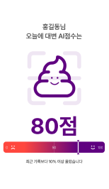

01 맡은 운영 범위 SCOPE
팀이 만든 Flutter 앱을 2025년 10월에 넘겨받아, 지금은 앱 전체의 유지보수와 운영을 맡고 있습니다. 협력 병원에서 QA가 올라오면 해당 상황을 앱에서 재현하고, 분석 요청부터 결과 표시까지 어디서 어긋나는지 추적해 고친 뒤 패치를 배포합니다. 지금까지 결과 조회 장애 수정, 재촬영 점수 보정, 신규 가입 종료, 강제 업데이트 적용을 진행했습니다.
02 구조 ARCHITECTURE
피칼스캐너는 Flutter 앱, 분석 서버 두 대, Firebase로 이루어져 있습니다. 앱을 켜면 설치된 버전이 최소 지원 버전 이상인지 먼저 확인하고 로그인으로 넘어갑니다.
사용자가 대변을 촬영하면 앱이 사진을 Cloud Storage에 올리고, AI 점수 서버에서 점수를 받아 검사 기록을 Firestore에 저장합니다. 이어서 사진과 점수를 LLM 분석 서버에 보내 색·형태 같은 항목별 분석 결과를 받고, 결과 화면에 보여 줍니다.
로그인 계정은 Firebase Auth가 관리하고, 카카오 로그인은 서버 함수가 로그인용 토큰을 발급합니다. 최소 지원 버전과 안내 문구는 Remote Config에 두어 앱을 다시 배포하지 않고 바꿉니다.
03 앱 화면 SCREENS
촬영부터 AI 분석 요청, 결과 확인까지 이어지는 앱의 기본 흐름입니다.

1 촬영 
2 AI 분석 요청 
3 결과 화면
앱 안의 사용 안내에 들어 있는 실제 화면입니다.
04 결과 RESULT
운영 방식 병원 QA는 앱에서 재현한 뒤 고칩니다. 요청·응답·에러 로그를 남기도록 바꿔, 다음 장애 때는 앱과 서버 사이 통신을 바로 확인할 수 있습니다.
05 확인 자료 EVIDENCE
- 기술
- Flutter · Dart · Go · Firebase
- 작업 기록
- 저장소 커밋과 변경 문서. 회사 소스는 비공개입니다.
- 관련 프로젝트
- 의료기기 소프트웨어 피칼스캐너-M은 별도 프로젝트로 정리했습니다.